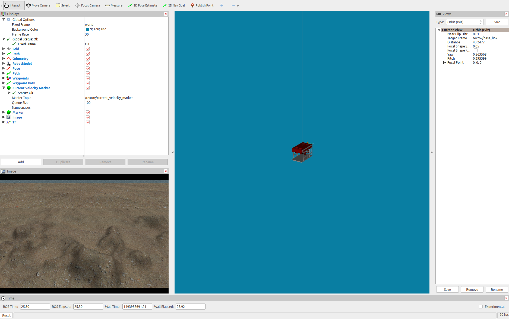
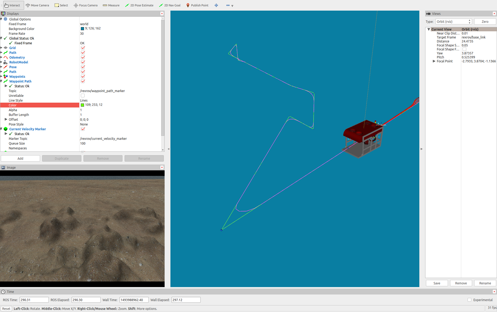

Creating new dynamic positioning controller
To facilitate the implementation of new control algorithms for the vehicle modelled in this package, a few Python modules were created as an interface to the vehicle's thruster manager, the local planner and setup the necessary publishers and subscribers needed to receive trajectory messages and send thruster commands.
The module also includes an implementation of Fossen's equations of motion that can be used by model-based controllers.
To create a controller based on this Python modules, see the following steps. All the files discussed below are available in the package uuv_tutorial_dp_controller in the uuv_tutorials folder.
Remember to change the name of the package when developing your own module to avoid conflicts when compiling the catkin workspace.
Creating the custom controller package¶
First, a new catkin package will be created to include the scripts and launch files necessary for this implementation. Replace the name of the catkin workspace catkin_ws below if yours is named differently.
cd ~/catkin_ws/src
catkin_create_pkg uuv_tutorial_dp_controller
This command will create the necessary files for the new package which will be edited further on in this tutorial. Next, two folders are needed, one launch folder to the launch files and one scripts folder, where the implementation of the custom controller will be stored.
cd ~/catkin_ws/src/uuv_tutorial_dp_controller
mkdir launch scripts
Creating the controller node¶
In the scripts folder, a Python file has to be created, here we will name it tutorial_dp_controller.py.
touch scripts/tutorial_dp_controller.py
This file will have the implementation of the controller named TutorialDPController, a very simple PID controller, as shown below.
#!/usr/bin/env python import rospy import numpy as np from uuv_control_interfaces import DPControllerBase class TutorialDPController(DPControllerBase): def __init__(self): super(TutorialDPController, self).__init__(self) self._Kp = np.zeros(shape=(6, 6)) self._Kd = np.zeros(shape=(6, 6)) self._Ki = np.zeros(shape=(6, 6)) self._int = np.zeros(shape=(6,)) self._error_pose = np.zeros(shape=(6,)) # Do the same for the other two matrices if rospy.get_param('~Kp'): diag = rospy.get_param('~Kp') if len(diag) == 6: self._Kp = np.diag(diag) print 'Kp=\n', self._Kp else: # If the vector provided has the wrong dimension, raise an exception raise rospy.ROSException('For the Kp diagonal matrix, 6 coefficients are needed') if rospy.get_param('~Kd'): diag = rospy.get_param('~Kd') if len(diag) == 6: self._Kd = np.diag(diag) print 'Kd=\n', self._Kd else: # If the vector provided has the wrong dimension, raise an exception raise rospy.ROSException('For the Kd diagonal matrix, 6 coefficients are needed') if rospy.get_param('~Ki'): diag = rospy.get_param('~Ki') if len(diag) == 6: self._Ki = np.diag(diag) print 'Ki=\n', self._Ki else: # If the vector provided has the wrong dimension, raise an exception raise rospy.ROSException('For the Ki diagonal matrix, 6 coefficients are needed') self._is_init = True def _reset_controller(self): super(TutorialDPController, self)._reset_controller() self._error_pose = np.zeros(shape=(6,)) self._int = np.zeros(shape=(6,)) def update_controller(self): if not self._is_init: return False if not self.odom_is_init: return self._int = self._int + 0.5 * (self.error_pose_euler + self._error_pose) * self._dt self._error_pose = self.error_pose_euler tau = np.dot(self._Kp, self.error_pose_euler) + np.dot(self._Kd, self._errors['vel']) + np.dot(self._Ki, self._int) self.publish_control_wrench(tau) if __name__ == '__main__': print('Tutorial - DP Controller') rospy.init_node('tutorial_dp_controller') try: node = TutorialDPController() rospy.spin() except rospy.ROSInterruptException: print('caught exception') print('exiting')
Analyzing the file in detail, for the controller to use the controller modules from uuv_control_interfaces, it has to inherit the DPControllerBase class and initialize it
class TutorialDPController(DPControllerBase): def __init__(self): super(TutorialDPController, self).__init__(self)
This will setup the super class to initialize, for example, odometry message subscribers and thruster manager topic publishers. For model-based controllers, the super class constructor has to be called as
super(TutorialDPController, self).__init__(self, is_model_based=True)
The controller's parameters, in this case K_p, K_d and K_i should retrieved from the parameter server to allow the controller to be used in different configurations. One alternative is to read this information from the node's private parameter namespace as shown below.
This is done by adding a ~ in front of the parameters's tag. The parameter has to be provided at the controller's launch file accordingly, which will be discussed later on.
if rospy.get_param('~Kd'): diag = rospy.get_param('~Kd') if len(diag) == 6: self._Kd = np.diag(diag) print 'Kd=\n', self._Kd else: # If the vector provided has the wrong dimension, raise an exception raise rospy.ROSException('For the Kd diagonal matrix, 6 coefficients are needed')
The _reset_controller method can be overriden in case internal variables must be reset when the reset service call is received.
It is important to also call the super class' reset method as seen below to ensure that error and reference vectors are also going to be cleared.
super(TutorialDPController, self)._reset_controller()
When using the super class DPControllerBase, there is no need to add an controller update sequence or a timer.
Once the method update_controller is implemented in the controller class, it will be given as a callback function to the odometry update method.
This update method should include the controller's algorithm and generate the control effort vector (in this case \tau) and use the super class function publish_control_wrench to publish it to the thruster manager input.
The last part of the file is necessary for the ROS node to be executed.
if __name__ == '__main__': print('Tutorial - DP Controller') rospy.init_node('tutorial_dp_controller') try: node = TutorialDPController() rospy.spin() except rospy.ROSInterruptException: print('caught exception') print('exiting')
Configuring the launch files¶
Once the custom controller is done, you have to turn your Python script into an executable and it can be done as follows, otherwise you will not be able to start the ROS node.
chmod u+x tutorial_dp_controller.py
Next step is to setup the launch file for the new controller. Create a new launch file as follows
cd ~/catkin_ws/src/uuv_tutorial_dp_controller/launch
touch start_tutorial_dp_controller.launch
Edit the file to include the following
<launch> <arg name="uuv_name"/> <arg name="model_name" default="$(arg uuv_name)"/> <arg name="saturation" default="5000"/> <arg name="Kp" default="11993.888,11993.888,11993.888,19460.069,19460.069,19460.069"/> <arg name="Kd" default="9077.459,9077.459,9077.459,18880.925,18880.925,18880.925"/> <arg name="Ki" default="321.417,321.417,321.417,2096.951,2096.951,2096.951"/> <arg name="output_dir" default="$(find uuv_thruster_manager)/config/$(arg model_name)"/> <arg name="config_file" default="$(find uuv_thruster_manager)/config/$(arg model_name)/thruster_manager.yaml"/> <arg name="tam_file" default="$(find uuv_thruster_manager)/config/$(arg model_name)/TAM.yaml"/> <include file="$(find uuv_thruster_manager)/launch/thruster_manager.launch"> <arg name="uuv_name" value="$(arg uuv_name)"/> <arg name="model_name" value="$(arg model_name)"/> <arg name="output_dir" value="$(arg output_dir)"/> <arg name="config_file" value="$(arg config_file)"/> <arg name="tam_file" value="$(arg tam_file)"/> </include> <group ns="$(arg uuv_name)"> <node pkg="uuv_control_utils" type="trajectory_marker_publisher.py" name="trajectory_marker_publisher" output="screen"> <remap from="trajectory" to="dp_controller/trajectory"/> <remap from="waypoints" to="dp_controller/waypoints"/> </node> <node pkg="uuv_tutorial_dp_controller" type="tutorial_dp_controller.py" name="tutorial_dp_controller" output="screen"> <remap from="odom" to="pose_gt"/> <remap from="trajectory" to="dp_controller/trajectory"/> <remap from="input_trajectory" to="dp_controller/input_trajectory"/> <remap from="waypoints" to="dp_controller/waypoints"/> <remap from="error" to="dp_controller/error"/> <remap from="reference" to="dp_controller/reference"/> <remap from="thruster_output" to="thruster_manager/input_stamped"/> <rosparam subst_value="true"> saturation: $(arg saturation) Kp: [$(arg Kp)] Kd: [$(arg Kd)] Ki: [$(arg Ki)] </rosparam> </node> </group> </launch>
The most important parts of the launch file to notice is that the vehicle namespace uuv_name must always be provided, since the simulation per default will have nodes specific to the operation of each vehicle created inside their namespaces. The thruster manager must also be initialized.
Info
For more information on how to setup the thruster manager, check the tutorial about configuration of the thruster manager.
Finally, the controller node has to be called, along with the correct parameters set by the arguments K_p, K_d and K_i in this example. You can pass this parameters by command line or set default vectors as seen above, but there should be no spaces between commas and values. They have to be set in the rosparam block. The trajectory_marker_publisher is an optional node used only to publish visual markers.
To start a small demonstration using the RexROV vehicle, you can create another launch file as follows
cd ~/catkin_ws/src/uuv_tutorial_dp_controller/launch
touch start_tutorial_dp_controller_demo.launch
and initialize a world, the vehicle and the RViz visualization tool as follows
<launch> <!-- This launch file will start the controller nodes with the necessary parameters --> <!-- Vehicle namespace: since the simulation can run with multiple vehicle, each vehicle is created under a namespace, which is per default equal to the name of vehicle model, but can be assigned differently at startup --> <arg name="uuv_name"/> <!-- Name of the vehicle model: the name of the robot model --> <arg name="model_name" default="$(arg uuv_name)"/> <!-- Control effort saturation --> <arg name="saturation" default="5000"/> <!-- The controller parameters are given below and will be given to the controller node in its private namespace. These are vectors and for roslaunch to see this as one argument, there can be no spaces between the commas and the floating point values. The default values are usually the ones that are going to be used. --> <arg name="Kp" default="11993.888,11993.888,11993.888,19460.069,19460.069,19460.069"/> <arg name="Kd" default="9077.459,9077.459,9077.459,18880.925,18880.925,18880.925"/> <arg name="Ki" default="321.417,321.417,321.417,2096.951,2096.951,2096.951"/> <arg name="output_dir" default="$(find uuv_thruster_manager)/config/$(arg model_name)"/> <arg name="config_file" default="$(find uuv_thruster_manager)/config/$(arg model_name)/thruster_manager.yaml"/> <arg name="tam_file" default="$(find uuv_thruster_manager)/config/$(arg model_name)/TAM.yaml"/> <!-- For the control vector to be distributed amongst the thrusters, a thruster manager node has to be initialized for this specific vehicle. The thruster manager will calculate the thruster allocation matrix if none is provided, but it is better if the TAM is stored in a YAML file beforehand. Check the tutorial on how to initialize the thruster allocation matrix. --> <include file="$(find uuv_thruster_manager)/launch/thruster_manager.launch"> <!-- The thruster manager will use the namespace uuv_name to initialize the node and will use the robot's model_name to search for the YAML file containing the thruster allocation matrix. --> <arg name="uuv_name" value="$(arg uuv_name)"/> <arg name="model_name" value="$(arg model_name)"/> <arg name="output_dir" value="$(arg output_dir)"/> <arg name="config_file" value="$(arg config_file)"/> <arg name="tam_file" value="$(arg tam_file)"/> </include> <!-- It is important to start all nodes relative to this vehicle under the vehicle's namespace in order to avoid errors and parameter being initialized in wrong place. Most of the nodes per default are going to look for configuration parameters and topics under the vehicle's namespace per default. --> <group ns="$(arg uuv_name)"> <!-- This node just reads the trajectory and waypoint topics and publishes visualization markers to RViz, but is not essential to the controller's operation --> <node pkg="uuv_control_utils" type="trajectory_marker_publisher.py" name="trajectory_marker_publisher" output="screen"> <remap from="trajectory" to="dp_controller/trajectory"/> <remap from="waypoints" to="dp_controller/waypoints"/> </node> <!-- Start the vehicle controller node. Remember to include this controller's script correctly in the CMakeLists.txt file of your catkin package. This can be done by adding the following line in the CMakeLists.txt after the line where catkin_package() is given: catkin_install_python(PROGRAMS scripts/tutorial_dp_controller.py DESTINATION ${CATKIN_PACKAGE_BIN_DESTINATION}) The scripts/tutorial_dp_controller.py file must also be set as an executable as follows >> cd <path_to_ros_package>/scripts >> chmod 777 tutorial_dp_controller.py --> <node pkg="uuv_tutorial_dp_controller" type="tutorial_dp_controller.py" name="tutorial_dp_controller" output="screen"> <!-- Remap necessary topics --> <remap from="odom" to="pose_gt"/> <remap from="trajectory" to="dp_controller/trajectory"/> <remap from="input_trajectory" to="dp_controller/input_trajectory"/> <remap from="waypoints" to="dp_controller/waypoints"/> <remap from="error" to="dp_controller/error"/> <remap from="reference" to="dp_controller/reference"/> <remap from="thruster_output" to="thruster_manager/input_stamped"/> <!-- Set the controller parameters in the node's private namespace--> <rosparam subst_value="true"> saturation: $(arg saturation) Kp: [$(arg Kp)] Kd: [$(arg Kd)] Ki: [$(arg Ki)] </rosparam> </node> </group> <!-- Now run the demo file to start a new simulation with this controller >> roslaunch uuv_tutorial_dp_controller start_tutorial_dp_controller_demo.launch --> </launch>
Before you can run this demo, the package has to be configured.
Configuring the package¶
To allow catkin to install all your modules, you can open the CMakeLists.txt file from your catkin package and edit it to look like in the example below.
cmake_minimum_required(VERSION 2.8.3) project(uuv_tutorial_dp_controller) find_package(catkin REQUIRED) catkin_package() catkin_install_python(PROGRAMS scripts/tutorial_dp_controller.py DESTINATION ${CATKIN_PACKAGE_BIN_DESTINATION}) install(DIRECTORY launch DESTINATION ${CATKIN_PACKAGE_SHARE_DESTINATION} PATTERN "*~" EXCLUDE)
Running the simulation¶
After you compile you workspace again with catkin_make or catkin build, you can run the demo launch file created before.
roslaunch uuv_tutorial_dp_controller start_tutorial_dp_controller_demo.launch
This will start the Gazebo simulator with an instance of the RexROV vehicle with this custom controller being used for positioning.

You can use one the modules from the uuv_control_utils package to send the vehicle some waypoints and see the controller in action. For example, use the default list of waypoints and send them to the controller by using
roslaunch uuv_control_utils send_waypoints_file.launch uuv_name:=rexrov
The local planner in uuv_control_interfaces that is used per default by the DPControllerBase class will receive the waypoints and apply a linear interpolation with polynomial blends to generate a path to be followed by the vehicle.
